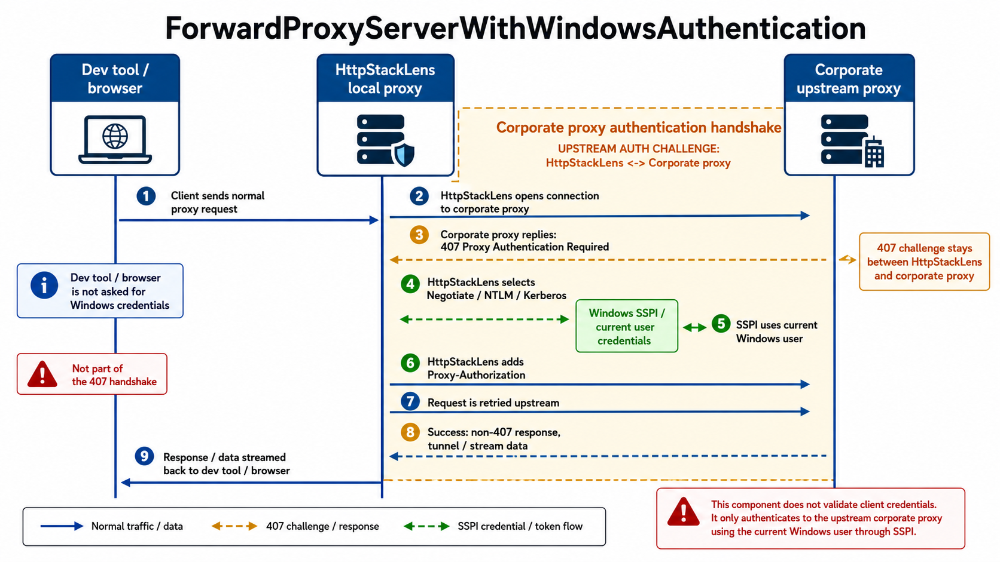

Vos applications → HttpStackLens (localhost:3128) → le proxy authentifié de votre entreprise → Internet. HttpStackLens ajoute l'authentification que vos outils ne savent pas faire ; ceux-ci ne voient qu'un simple proxy local non authentifié.
1. Comment ça marche
Un proxy d'entreprise exige généralement une authentification NTLM, Kerberos ou Negotiate. De
nombreux CLI, gestionnaires de paquets et SDK ne savent pas réaliser ce handshake — ils reçoivent
un 407 Proxy Authentication Required et abandonnent. Un assistant dédié résout cela en
faisant tourner un proxy local qui s'authentifie en amont à leur place.
Cela aide surtout les outils qui parlent le proxy HTTP standard mais n'implémentent pas
NTLM, Kerberos ni Negotiate, et échouent donc avec un 407 derrière un proxy authentifié
Windows. Exemples courants :
- Node.js & npm / yarn / pnpm
- Python —
pip,requests,conda - Modules Go (
go get), Rustcargo - Java — Maven, Gradle ; Ruby —
gem, Bundler ; PHP — Composer - Docker & les gestionnaires de paquets de conteneurs (
apt,apk) - De nombreux CLI cloud / CI et extensions de serveur de langage / IDE
Pointez n'importe lequel vers localhost:3128 et HttpStackLens réalise l'authentification à leur place.
HttpStackLens fait la même chose : il expose un proxy local non authentifié sur
localhost:3128, relaie tout vers votre proxy d'entreprise amont et
injecte vos identifiants Windows à la sortie. En prime, chaque requête traverse l'interface web
temps réel, vous voyez donc exactement ce que font vos outils.

2. Pointer HttpStackLens vers le proxy amont
Ouvrez config.yaml et renseignez output_proxy_uri avec votre proxy d'entreprise :
proxy:
port: 3128
# Le proxy d'entreprise vers lequel tout est relayé
output_proxy_uri: http://proxy.corp.example.com:8080
no_proxy:
- "localhost"
- "127.0.0.1"
- ".local"
- "host.docker.internal"
Les hôtes sous no_proxy sont joints directement, en contournant le proxy amont —
gardez-y vos hôtes internes et loopback. Vous pouvez aussi modifier ces réglages en direct depuis
le panneau de configuration de l'interface web, sans redémarrer.
assets/screenshots/upstream-settings.png3. Ajouter l'authentification Windows
L'injection des identifiants de l'utilisateur connecté repose sur l'API SSPI de Windows (secur32.dll). Ces options ne sont compilées qu'en ciblant Windows et renvoient une erreur ailleurs.
Activez l'injection d'identifiants pour que HttpStackLens réponde au défi d'authentification du proxy amont à votre place :
proxy:
output_proxy_uri: http://proxy.corp.example.com:8080
# Injecter les identifiants de l'utilisateur Windows courant vers le proxy amont
add_windows_authentication_to_output_proxy: trueHttpStackLens utilise les identifiants de la session en cours via NTLM, Kerberos ou Negotiate — il préfère NTLM quand les deux sont proposés. Vous ne saisissez ni ne stockez aucun mot de passe ; c'est l'OS qui fournit le jeton.
Le même comportement est disponible en option de ligne de commande en lançant le binaire directement :
httpStackLens.exe --output-proxy-add-windows-auth4. Gérer les proxys amont 401/407
Certains proxys amont répondent par un statut que le client n'attend pas, ou exigent
l'authentification à une étape précise du handshake. HttpStackLens embarque un mode de
compatibilité pour ces flux basés sur 401/407 afin que la négociation
aboutisse proprement.

5. Pointer vos outils vers HttpStackLens
Dirigez maintenant vos outils vers le proxy local — aucun identifiant nécessaire de leur côté :
# Shell (macOS / Linux)
export http_proxy=http://localhost:3128
export https_proxy=http://localhost:3128
# Shell (Windows PowerShell)
$env:HTTP_PROXY = "http://localhost:3128"
$env:HTTPS_PROXY = "http://localhost:3128"
# git
git config --global http.proxy http://localhost:3128
# npm
npm config set proxy http://localhost:3128
npm config set https-proxy http://localhost:3128Pointez les conteneurs vers http://host.docker.internal:3128 et assurez-vous que cet hôte figure dans la liste no_proxy de HttpStackLens pour qu'il ne soit pas renvoyé vers l'amont.
6. Vérifier que ça fonctionne
-
Envoyer une requête
curl -x http://localhost:3128 https://example.com -I -
L'observer dans l'interface web
Ouvrez http://localhost:9000. La requête doit apparaître dans la liste en direct avec un statut
2xx— preuve qu'elle a atteint Internet via le proxy amont authentifié. -
Mettre l'ancien assistant à la retraite
Une fois le trafic établi, vous pouvez arrêter le proxy d'authentification local que vous utilisiez auparavant. HttpStackLens gère désormais l'authentification et vous offre une visibilité complète sur le trafic.
Vos outils parlent à un simple proxy local pendant que HttpStackLens réalise l'authentification vers le proxy d'entreprise — chaque requête restant visible dans l'interface.